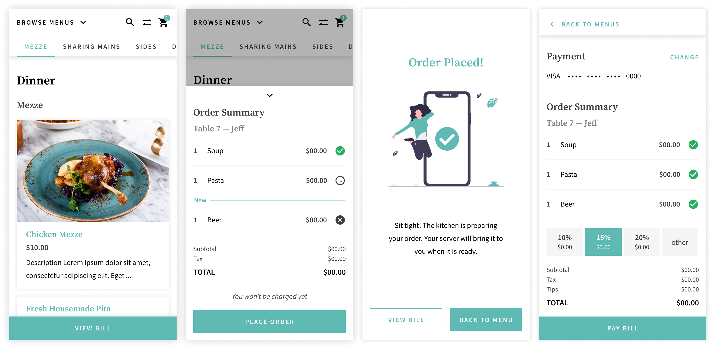
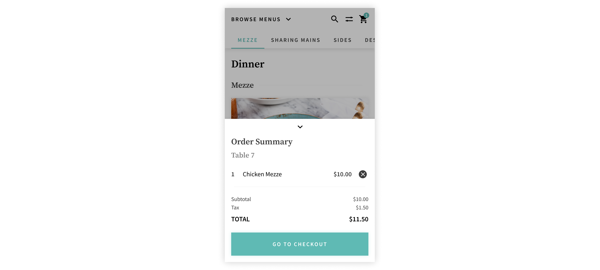

Role: Product Designer
Timeline: 6 Weeks
Team: 1 Designer, 4 Engineers
I interned at a small-scale start-up in the food and beverage industry at the beginning of the COVID-19 pandemic. Restaurants everywhere were being affected by the lockdown so Transparent Kitchen (TK) teamed up with App8 to quickly pivot their business model to focus on getting local restaurants back on their feet.
We had to move quickly to get a product out to market before too many restaurants had to shut down permanently. Being on a small but mighty design team of three, I had a lot of ownership over various design initiatives. From kickstarting Transparent Kitchen’s design system to launching the MVP, we were able to help restaurants open up again sooner rather than later.
Building tools and solutions for the food and beverage industry.
Once dine-in was allowed again, restaurants weren’t able to operate at full capacity due to social distancing regulations, layoffs, and budget cuts. Both restaurant workers and customers felt anxiety about being in contact with other people outside of their bubbles. However, customers want to dine out again and restaurants want to get back to business. Both parties highly value the experience of eating in a restaurant.
How might Transparent Kitchen & App8 help restaurants safely offer dine-in services in a pandemic with reduced staff?
To protect customers and restaurant staff, we designed a white-label, contactless dine-in experience along with an end-to-end Point of Sales system (PoS).
The user scans a QR code on their table to view the menu. From the menu, they are able to send their order to the kitchen and pay for their meal directly from their phone. The only time customers need to interact with the waiter is when their food is being brought to them.
By white-labelling the product, restaurants are able to keep their sense of identity in their digital menus. By customizing the appearance of the interface, each restaurant can preserve their individuality even if their neighbour is also using the same technology.
Custom menu samples.
Wanting to offer customers their full menus, restaurants didn’t want to condense their menus into one. They wanted to keep all their different menus (ie. lunch, dinner, drinks, dessert, etc.) and all the sections within each menu. We needed a way for regular customers to find their usual order while still encouraging them and new customers to explore and discover different dishes.
Since users scan the QR code at the restaurant, the correct menu is presented to them based on the time of the scan. If the user is scanning at 7PM, the dinner menu is displayed. Other menus (ie. the lunch menu) may not be as relevant to the user at the moment so they are tucked away into a dropdown to not distract the user. However, some menus can be available at the same time so in the dropdown, they’re still easily accessible.
Left: Dropdowns for menu navigation. Right: Scrollable Tabs for section navigation
Scrollable tabs are used to separate sections with a menu so that users can see all the sections at a glance and navigate directly to the one of interest. Should the user choose to scroll and browse through the menu, the tabs indicate to the user where they are within the menu.
In early explorations, the menu name was in the place of “browse menus”. However, users indicated that due to the UI treatment, it wasn’t very clear that it was interactable. The font was a header font rather than an interactive one.
By changing the font to be consistent with the other interactive elements and a copy update, it was clearer to users that there were other menus and how to access them.
Competitive analysis shows that no other menus (ie. UberEats, DoorDash, etc.) have the ability to filter menu items. Considering that many people have dietary restrictions (allergies, health, religious, etc.), browsing a menu can be frustrating. TK’s restaurant partners know that as well and take care in marking each dish’s allergens and diets. To reflect that, we added a filter functionality.
To remind users that they have filters selected and that the menu view is now altered, applied filter chips are placed at the top. Users also have the option to remove specific filters or reset the menu view completely without having to go back into the filter drawer.
The first iteration of filters confused all five of the users in usability testing. It was designed based on how restaurants would tag the allergens and diets of each dish; which diets the item fits under and what allergens it contains. However, marking allergens in such a way causes it to behave opposite of typical filter actions when applied.
Selecting a filter chip should keep items that fit that parameter and for allergens, it’s counter intuitive to select parameters to be removed. To remedy this, labels were changed to “[allergen]-free” and the developers were able to flip the logic in the backend so that restaurants can keep tagging dishes that contain an allergen without going against filtering behaviour.
While a cart is a pretty standard pattern, we wanted to design it in such a way that it doesn’t interrupt the user’s browsing flow as the cart plays an important role in the user’s decision making process. By having the order summary pull up from the bottom in a drawer, it’s visible and accessible, allowing users to make decisions quickly based on the cart’s value and check out easily.
Previously, the car existed on a separate page, following a common pattern. By taking the user away from the menu, it makes it more difficult for them to make decisions based on the cart’s value. It’s frustrating for the user to have to switch between two screens to make decisions. Additionally, since the user has left the menu, it’s not as likely that they would return to it. They’re more likely to continue to click through to placing the order.
Iteration 1
Iterating upon that, the final design of the bottom drawer not only enables users to make decisions quickly and easily, but it also encourages users to continue browsing and adding more items.
There are two ways for users to pay for their meals: at the end of their meal (an open tab) or with every order placed (close tab).
The encouraged flow is to open a tab however, the user will need an account. This option allows users to place multiple, distinct orders and pay with a stored card at the end to close out their bill. An open tab is traditionally how the checkout and payment process goes when dining in. This flow also supports a new incoming feature: bill splitting.
Account user, ongoing tab flow
An account is required for security. The customer must input their card information before placing their order so that they can be charged for their meal even if they leave without formally closing out their bill. An account ensures that the user’s card information is stored securely. Customers leaving without paying for their meal was a concern to many restaurants due to reduced number of staff who are also managing an increase of take-out orders.
If the user chooses to not create an account, they have the option of paying with each order placed. Everytime the user places an order, they will need to enter their card information each time.
Guest user, no tab flow
To introduce and convince users to create an account, we used interstitial screens to prompt users. We A/B tested a dialog interstitial screen against a full screen one.
Left: Dialog. Right: Full screen.
4/5 users preferred the full screen version for various reasons:
With an ongoing tab, users can see what they’ve ordered so far and place new orders. By keeping users informed on the status of their order, it reduces the need to interact with their server.
While some users didn’t completely understand the difference between an ongoing tab and paying out the bill right away, 4/5 preferred to dine with an open tab once they figured it out. Many users noted the similarity to putting their card down at a bar so a quick copy update mitigated the confusion and helped first time users understand what it is right away. 3/5 users liked being able to keep track of what they had ordered and the reassurance that the kitchen received their order.
Due to how the feature mirrors a pre-pandemic dine-in experience, users liked the familiarity and said that an ongoing tab made more sense to them in a sit-in context. Two users said that they are more likely to stay longer and order more because they haven’t paid yet; paying the bill feels like closure. Another user said that this option allowed more flexibility in case there was something wrong with their order or if they wanted to make changes after the order was sent.
To deliver the contactless dine-in experience, there is a B2B side of the product. Since this is a white-label product, TK builds the technology but each individual restaurant can skin the UI to match their brand.
Sample digital menus based off of real restaurant (physical) menus.
To build an unique menu, there are a variety of different elements that can be customized by restaurant owners. To find the best way to organize all the different settings, we conducted a card sorting activity with all customizable elements. Here are the results:
Afterwards, we researched menus and thought about all the individual properties (ie. fonts, colour, stroke, etc.) that would be necessary for each element to recreate each physical menu in a digital space.
MVP launch! üöÄ Selected restaurants are currently using TK‚Äôs ordering system to safely serve customers during the pandemic.
I'm incredibly proud to have been a part of the process of launching TK’s product to market.
Being one of the first TK design hires and on such a small team, I got to dip my toes in things other than just design. Since TK has never had a proper design team before, I got to do some design ops work. From building their design system to defining design processes, I really had to think about the way we design as a team and how to improve that. I even pushed for the team to switch to Figma and ensured that the new tool was adopted.
While it was a lot of responsibility to lay down that foundation, I’m proud of having been a core pillar in setting TK up for the future. I’m glad that even though my entire internship was fully remote, I was able to make such a large and meaningful impact.
As for design takeaways, I gained experience in structuring and conducting usability tests. I learned about best practices for running user/usability tests and what metrics to use to track results. One thing that really stood out to me was that validating a feature doesn’t always mean good usability and vice versa. Those are two different types of tests with two different goals that give two different results.
If a picture is worth 1000 words then a prototype is worth a million. Communicating designs for development can be difficult and confusing when only words are being used. A quick and simple prototype will get the point across much faster and clearer.
The last design takeaway is learning how to build for the future and thinking ahead. Even though we were building an initial MVP, we still had to keep what’s to come in mind. We had to ensure that the work we were doing would set up future features and how they fit in. It’s a careful balancing act of working to get a product to market and considering how to build upon it.